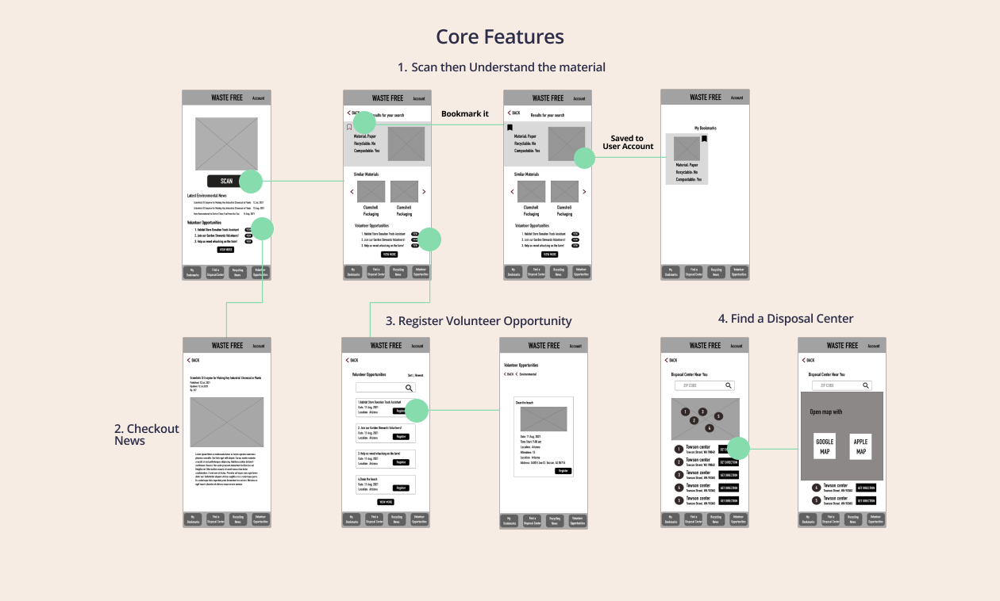

Waste Free is an app that helps users to become a better recycler. Target audience of this app is people who want to do their part to protect the environment by sorting waste correctly.
July, 2021 - Aug, 2021
UX/UI Design, Competitive Audit, User Research, Prototyping, Usability Testing
Everyone buys groceries and orders food take-outs, but sometimes it’s hard to tell which boxes or papers are recyclable. Most of the audiences want to help protect the environment but they don’t know how to do it efficiently.
This app will help users define their garbage type so that they can sorting waste in the right way. Additionally, this app lists volunteering opportunities, in which users can easily register volunteering events both on desktop and mobile. Eventually, help slow down global warming for social good.
I conducted the unmoderated user research since it's during covid and I want our potential users to be safe at home. Before the user research, I came up with all the ideas from Crazy Eight, and I thought users would have loved, but after I got user research results and organized them into an insight, I noticed that most of the users thought the user flow of the app is not very sufficient. There is so much information on the homepage that users felt confused. So I changed the homepage to focus on one thing, which is the main feature of this app: To scan and define your garbage type.


I did a quick ideation exercise to come up with ideas for how to address the gaps in the competitive audit. My focus was specifically on identify waste material and let use registering volunteer opportunities.


After ideating and drafting some paper wireframes, I created the initial digital wireframes of this Waste Free app. These designs focused on smooth user flow, helping users define their garbage and registering an volunteer event.

The high-fidelity prototype followed the same user flow as the low-fidelity prototype, including design changes made after the usability study.


With the app designs completed, I started work on designing the responsive website. I used this sitemap to guide the organizational structure of each screen’s design to ensure a cohesive and consistent experience across devices.

Desktop and Tablet: Both designs don’t have the scan feature, and the main purpose for desktop and tablet design is donate and check out my mobile searching results, so that I added recycle informations and donate button.